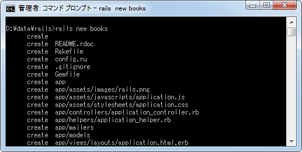
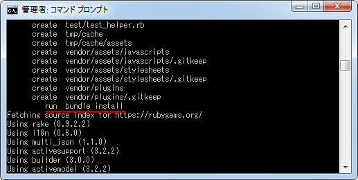
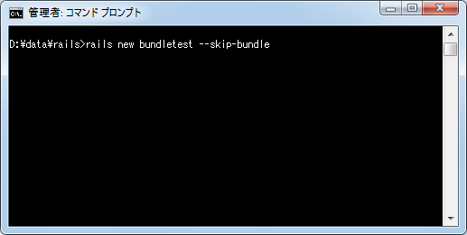
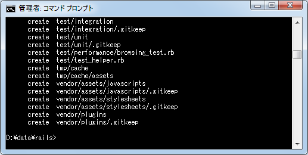
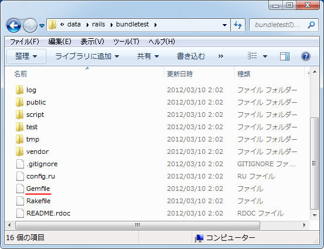
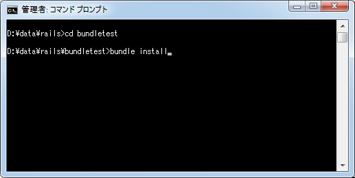
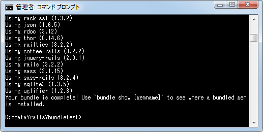
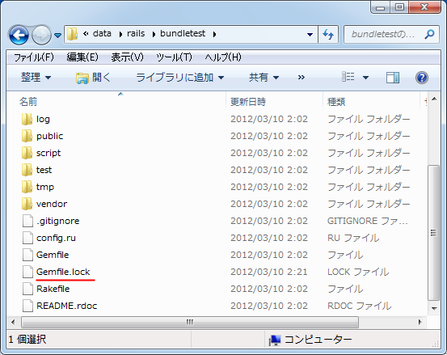

Bundlerを使��Gemパッケージ�管�
Rails3系�らアプリケーション�必���るGemパッケージ�管��Bundlerを使�よ���り���。����Bundler�������も���実際���や��使�������解説���。
Gemパッケージ��
���Gemパッケージ�簡��解説��。
Rubyã�§ä½¿ã‚�れるライブラリやアプリケーションã�¯Gemã�¨å‘¼ã�°ã‚Œã‚‹å½¢å¼�ã�®ãƒ‘ッケージã�«ã�™ã‚‹ã�“ã�¨ã�Œã�§ã��ã�¾ã�™ã€‚多ã��ã�®ãƒ©ã‚¤ãƒ–ラリã�ŒGemå½¢å¼�ã�§ãƒ‘ッケージã�•ã‚Œå…¬é–‹ã�•ã‚Œã�¦ã�Šã‚Šã€�ã�“れらã�¯RubyGemsã�¨å‘¼ã�°ã‚Œã‚‹ãƒ‘ッケージ管ç�†ãƒ„ールを使ã�£ã�¦ãƒ€ã‚¦ãƒ³ãƒãƒ¼ãƒ‰ã‚’è¡Œã�ªã�£ã�Ÿã‚Šã‚¤ãƒ³ã‚¹ãƒˆãƒ¼ãƒ«ã�™ã‚‹ã�“ã�¨ã�Œã�§ã��ã�¾ã�™ã€‚ã�“れらã�®ãƒ‘ッケージã�®ã�“ã�¨ã‚’å�˜ã�«Gemã�¨ã�‹Gemパッケージã�ªã�©ã�¨å‘¼ã‚“ã� ã‚Šã�—ã�¾ã�™ã€‚
RailsもGem形��パッケージ����も���Railsをインストール��時も「gem install rails��RubyGemsを使��インストールを行����。
Railsã�§ä½œæˆ�ã�—ã�Ÿã‚¢ãƒ—リケーションã�¯é€šå¸¸Railsã� ã�‘ã�§ã�ªã��ä»–ã�®å¤šã��ã�®Gemパッケージも使ã�„ã�¾ã�™ã€‚例ã�ˆã�°SQLiteã‚’Railsã�‹ã‚‰åˆ©ç”¨ã�™ã‚‹ã�Ÿã‚�ã�«å¿…è¦�ã�ª"sqlite3"パッケージもã��ã�®ä¸€ã�¤ã�§ã�™ã€‚
Bundler��
Railsã�®ã‚¢ãƒ—リケーション開発を複数ã�®PCã�§è¡Œã�ªã�Šã�†ã�¨ã�—ã�Ÿå ´å�ˆã‚’考ã�ˆã�¦ã�¿ã�¾ã�™ã€‚プãƒã‚°ãƒ©ãƒ ファイルã�¯ã‚‚ã�¡ã‚�ã‚“ã�§ã�™ã�Œã€�å…¨ã�¦ã�®PCã�§å¯¾è±¡ã�®ã‚¢ãƒ—リケーションã�§ä½¿ç”¨ã�—ã�¦ã�„ã‚‹Gemパッケージをインストールã�—ã�¦ã�Šã�‹ã�ªã�‘ã‚Œã�°ã�ªã‚Šã�¾ã�›ã‚“。ã�¾ã�ŸGemパッケージã�®ãƒ�ージョンもæ�ƒã�ˆã‚‹å¿…è¦�ã�Œã�‚ã‚Šã�¾ã�™ã€‚
���使�れる��Bundler��。Bundler�Railsアプリケーション�必���るGemパッケージ�種�や�ージョンを管���複数�PC�必��Gemパッケージをインストール�る仕組�を�供���れ��。
Bundlerを使��Gemパッケージ�インストール
�れ��実際�Bundlerを使�方を確�������。「rails new アプリケーション��を使��Railsアプリケーションを作��る��必��ファイルを作���後�「bundle install��自動的�実行�れ�����。


��「bundle install��Bundlerを使��必��Gemパッケージをインストール���る部分��り��。
��よ��Railsアプリケーションを新��作���時�(1)必��ファイル�作��(2)必��Gemパッケージ�記載�れ�Gemfile�作��(3)Gemfile�基���Gemパッケージ�インストール�(4)他�環境�使用�る���Gemfile.lock�作���������行�れ����。
��動作を確��る���「bundle install�を手動�行������。Railsアプリケーションを作��る時�「--skip-bundle�を付��実行�る�「bundle install�を自動的�実行���ん。今�テスト���次�よ��アプリケーションを作�����。
rails new bundletest --skip-bundle


必��ファイル�作����行��れ��り「bundle install��実行�れ����ん。
��作��れ�ディレクトリ�ルートを見�下��。次�よ��「Gemfile����ファイル�作��れ����。

「Gemfileã€�をテã‚ストエディタã�§é–‹ã�„ã�¦ã�¿ã�¾ã�™ã€‚
source 'https://rubygems.org' gem 'rails', '3.2.2' # Bundle edge Rails instead: # gem 'rails', :git => 'git://github.com/rails/rails.git' gem 'sqlite3' # Gems used only for assets and not required # in production environments by default. group :assets do gem 'sass-rails', '~> 3.2.3' gem 'coffee-rails', '~> 3.2.1' # See https://github.com/sstephenson/execjs#readme for more supported runtimes # gem 'therubyracer' gem 'uglifier', '>= 1.0.3' end gem 'jquery-rails' # To use ActiveModel has_secure_password # gem 'bcrypt-ruby', '~> 3.0.0' # To use Jbuilder templates for JSON # gem 'jbuilder' # Use unicorn as the app server # gem 'unicorn' # Deploy with Capistrano # gem 'capistrano' # To use debugger # gem 'ruby-debug19', :require => 'ruby-debug'
æ–‡é ã�«"#"ã�Œã�‚ã‚‹ã‚‚ã�®ã�¯ã‚³ãƒ¡ãƒ³ãƒˆã�§ã�™ã€‚ç´°ã�‹ã�„記述ã�®ä»•æ–¹ã�¯ã�“ã�“ã�§ã�¯çœ�ç•¥ã�•ã�›ã�¦é ‚ã��ã�¾ã�™ã�Œã€�例ã�ˆã�°æ¬¡ã�®ã‚ˆã�†ã�ªã�“ã�¨ã�Œæ›¸ã�‹ã‚Œã�¦ã�„ã�¾ã�™ã€‚
gem 'rails', '3.2.2' # �ージョン3.2.2� Rails gem 'sqlite3' # 任���ージョン� sqlite3 gem 'jquery-rails' # 任���ージョン� jquery-rails
次ã�«ã€Œbundle installã€�ã‚’è¡Œã�ªã�„ã�¾ã�™ã€‚ã�“ã�®æ™‚先程ã�®è‡ªå‹•ã�§ä½œæˆ�ã�•ã‚Œã�Ÿ Gemfile ã‚’å…ƒã�«Gemパッケージã�Œã‚¤ãƒ³ã‚¹ãƒˆãƒ¼ãƒ«ã�•ã‚Œã�¾ã�™ã€‚Gemfile ファイルã�«æ›¸ã�‹ã‚Œã�ŸGemパッケージã�¨ã€�ã��れらã�®Gemパッケージã�Œä¾�å˜ã�™ã‚‹(å¿…è¦�ã�¨ã�™ã‚‹)ä»–ã�®Gemパッケージも自動的ã�«ã‚¤ãƒ³ã‚¹ãƒˆãƒ¼ãƒ«ã�•ã‚Œã�¾ã�™ã€‚
��対象�アプリケーションディレクトリ�移動����後�「bundle install��実行��下��。
bundle install


�れ�必��Gemパッケージ�インストール�れ���。
��「Gemfile.lock����ファイル�新��作��れ����。

å…ˆã�«è¨˜è¼‰ã�—ã�Ÿã‚ˆã�†ã�«ã€Œbundle installã€�ã‚’è¡Œã�ªã�†ã�¨ã€�「Gemfileã€�ã�«æ›¸ã�‹ã‚Œã�ŸGemパッケージã�¨ã€�ã��ã�®Gemパッケージã�Œä¾�å˜ã�—ã�¦ã�„ã‚‹Gemパッケージを自動的ã�«èª¿ã�¹ã�¦å…¨ã�¦ã‚¤ãƒ³ã‚¹ãƒˆãƒ¼ãƒ«ã�—ã�¦ã��ã‚Œã�¾ã�™ã€‚「Gemfile.lockã€�ã�¯ã‚¤ãƒ³ã‚¹ãƒˆãƒ¼ãƒ«ã�•ã‚Œã�ŸGemパッケージã�®å��å‰�ã�¨ãƒ�ージョンã�Œè¨˜éŒ²ã�•ã‚Œã�Ÿã‚‚ã�®ã�§ã�™ã€‚
ã�§ã�¯ã€ŒGemfile.lockã€�をテã‚ストエディタã�§é–‹ã�„ã�¦ã�¿ã�¾ã�™ã€‚
GEM
remote: https://rubygems.org/
specs:
actionmailer (3.2.2)
actionpack (= 3.2.2)
mail (~> 2.4.0)
actionpack (3.2.2)
activemodel (= 3.2.2)
activesupport (= 3.2.2)
builder (~> 3.0.0)
erubis (~> 2.7.0)
journey (~> 1.0.1)
rack (~> 1.4.0)
rack-cache (~> 1.1)
rack-test (~> 0.6.1)
sprockets (~> 2.1.2)
activemodel (3.2.2)
activesupport (= 3.2.2)
builder (~> 3.0.0)
activerecord (3.2.2)
activemodel (= 3.2.2)
activesupport (= 3.2.2)
arel (~> 3.0.2)
tzinfo (~> 0.3.29)
activeresource (3.2.2)
activemodel (= 3.2.2)
activesupport (= 3.2.2)
activesupport (3.2.2)
i18n (~> 0.6)
multi_json (~> 1.0)
arel (3.0.2)
builder (3.0.0)
coffee-rails (3.2.2)
coffee-script (>= 2.2.0)
railties (~> 3.2.0)
coffee-script (2.2.0)
coffee-script-source
execjs
coffee-script-source (1.2.0)
erubis (2.7.0)
execjs (1.3.0)
multi_json (~> 1.0)
hike (1.2.1)
i18n (0.6.0)
journey (1.0.3)
jquery-rails (2.0.1)
railties (>= 3.2.0, < 5.0)
thor (~> 0.14)
json (1.6.5)
mail (2.4.3)
i18n (>= 0.4.0)
mime-types (~> 1.16)
treetop (~> 1.4.8)
mime-types (1.17.2)
multi_json (1.1.0)
polyglot (0.3.3)
rack (1.4.1)
rack-cache (1.2)
rack (>= 0.4)
rack-ssl (1.3.2)
rack
rack-test (0.6.1)
rack (>= 1.0)
rails (3.2.2)
actionmailer (= 3.2.2)
actionpack (= 3.2.2)
activerecord (= 3.2.2)
activeresource (= 3.2.2)
activesupport (= 3.2.2)
bundler (~> 1.0)
railties (= 3.2.2)
railties (3.2.2)
actionpack (= 3.2.2)
activesupport (= 3.2.2)
rack-ssl (~> 1.3.2)
rake (>= 0.8.7)
rdoc (~> 3.4)
thor (~> 0.14.6)
rake (0.9.2.2)
rdoc (3.12)
json (~> 1.4)
sass (3.1.15)
sass-rails (3.2.4)
railties (~> 3.2.0)
sass (>= 3.1.10)
tilt (~> 1.3)
sprockets (2.1.2)
hike (~> 1.2)
rack (~> 1.0)
tilt (~> 1.1, != 1.3.0)
sqlite3 (1.3.5-x86-mingw32)
thor (0.14.6)
tilt (1.3.3)
treetop (1.4.10)
polyglot
polyglot (>= 0.3.1)
tzinfo (0.3.32)
uglifier (1.2.3)
execjs (>= 0.3.0)
multi_json (>= 1.0.2)
PLATFORMS
x86-mingw32
DEPENDENCIES
coffee-rails (~> 3.2.1)
jquery-rails
rails (= 3.2.2)
sass-rails (~> 3.2.3)
sqlite3
uglifier (>= 1.0.3)
�複���る部分も�り�����れら�インストール�れ�Gemパッケージ��り��。
ä»–ã�®ç’°å¢ƒã�§å�Œã�˜ã‚¢ãƒ—リケーションã�®é–‹ç™ºã‚’è¡Œã�ªã�†å ´å�ˆã�¯ã€�プãƒã‚°ãƒ©ãƒ ファイルã�«åŠ ã�ˆã�¦ã�“ã�®ã€ŒGemfile.lockã€�ファイルをé…�布ã�—ã�¾ã�™ã€‚ã��ã�—ã�¦ä»–ã�®ç’°å¢ƒã�§ã€Œbundle installã€�を実行ã�™ã‚‹ã�¨ã€�今度ã�¯ã€ŒGemfile.lockã€�ファイルã�Œå�‚ç…§ã�•ã‚Œã€�指定ã�•ã‚Œã�Ÿãƒ�ージョンã�®Gemパッケージã�Œã‚¤ãƒ³ã‚¹ãƒˆãƒ¼ãƒ«ã�•ã‚Œã�¾ã�™ã€‚
��よ��Bundlerを使�����必��Gemパッケージを管�����開発環境を簡��構築�る�������。
( Written by Tatsuo Ikura )

著者 / TATSUO IKURA
åˆ�心者ï½�ä¸ç´šè€…ã�®æ–¹ã‚’対象ã�¨ã�—ã�Ÿãƒ—ãƒã‚°ãƒ©ãƒŸãƒ³ã‚°æ–¹æ³•ã‚„開発環境ã�®æ§‹ç¯‰ã�®è§£èª¬ã‚’è¡Œã�†ã‚µã‚¤ãƒˆã�®é�‹å–¶ã‚’è¡Œã�£ã�¦ã�„ã�¾ã�™ã€‚